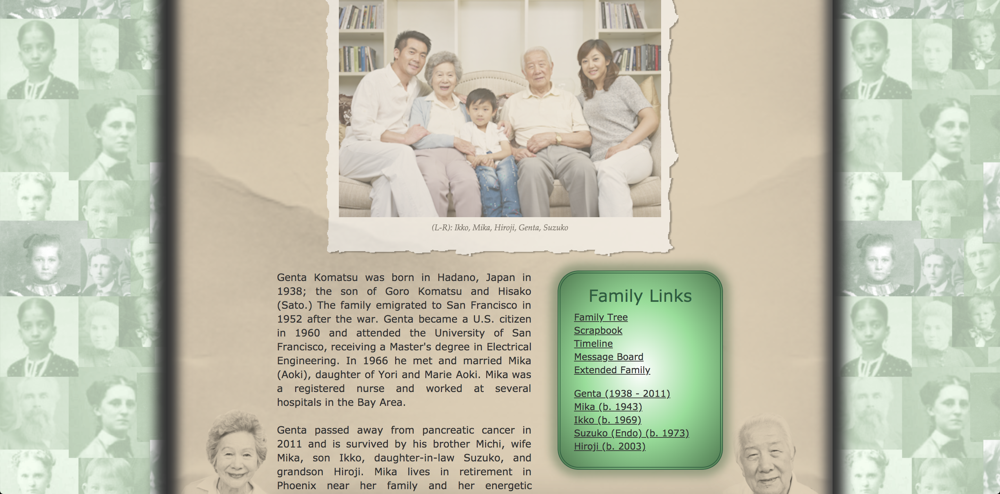

Education
Mountain Ridge High School Glendale, AZ Expected Grad Date: May 2020 West-MEC Coding Program GPA: 4 Relevant Coursework: I take all basic courses & electives, such as math, science, ela, & history. then currently as an elective i have systematics.Some of My Completed West-MEC Projects
 Exercise 06 Project 601
Project 601
 Project 602
Project 602
 Project 801
Project 801
 Project 803
Project 803
Employment
PLAYLive Nation Glendale, AZ Expected Grad Date: May 2020 Intern Responsibilities include: Monitoring the customers, making sure the tech is all ready to go, & be a cashier sometimes.Volunteer Hours
| Ways i could Volunteer & Hour Requirements | Feed Homeless People | West-MEC FBLA Volunteer Hour Opportunities |
|---|---|---|
| 2 Hours Per Day |
10 Per Semester |
|
| Summary | First off, you show up to the area where the feeding is taking place, then you talk to a person in charge and find your position then just work. | West-MEC offers a variety of opportunities to gain your semester required volunteer hours, by hosting fundraisers, attending secret santa, having student attend community service etc. |
| Hours Actually Made | 3 1/2 Hours | 0 Hours |